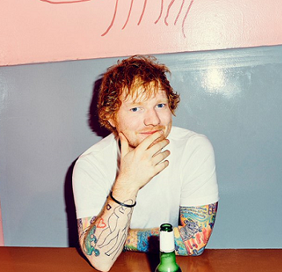
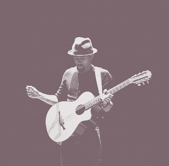

|  |  | |
|---|---|---|
|
Source: Twitter Ed Sheeran-Happier Ed Sheeran-Perfect |
Source: Favim.com Jason Marz- Im Yours Jason Mazr ft Colbie Caillat- Lucky |
Source: Favim.com James Arthur-Impossible James Arthur - Empty Space |
| Ed Sheeran is a famous artists all around the world.
I will listen to his song when I drive a car alone. Ed voice is beautiful and his songs is meaningful. I think he have catch a billion woman hearts in world. Cause if you see the lyrics every sentences and word are lovely. Seems he understand woman feelings well. I do my research on every types of Ed songs. The lyrics make me curious. Why did he write the song? For who? And of course every songs has their own story. Most of Ed Sheeran songs I really love listen to:
|
Jason Marz is one of my favourite singer since I am in middle school. For me, his voice is unique and cool. I also love his simple personality. Wearing a hat, long-sleeve shirt and hissss guitar!. And now I see he have come with a new looks. Jason and his long hair. Great! One of my favourite songs from Jason is Im Yours!. I feel energetic everytime I listen to his songs. Plus, I automactically feel excited. Anddddd. the best part of it this is the only song that I can sing well huhuh. I am very bad at singing but for Jason everything's fine. My other favourite songs from Jason Mraz are:
|
The winner of X-Factor in 2012. Since that, James Arthur be known by all country. James husky voice make all songs great to hear again and again. I know him through the X-factor by listening to his cover of Shontelle's which is impossible. After winning the competition the song has debut as number one on the UK. James Arthur is not only a singer but a songwriter. For me, James is the only male singer who have husky voice that make people fall in love with him. Just like Jason Marz and Ed Sheeran, he also sing with his guitar. James will come out with his new song. Here is the lists of my fav song from James:
|
| © 2021 Huda Zainal. All Rights Reserved |
|---|